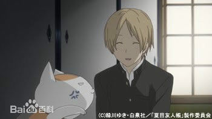
从小就看得见人称妖怪之物的夏目贵志，一直被人敬而远之。但是继承了外婆铃子的遗物“友人帐”后，透过归还友人帐上的名字给妖怪们的历程，夏目也交到了不少朋友，过著珍惜每一天的生活。然而，也有钗h妖怪，觊觎能使妖怪听命的友人帐。有一天，夏目竟然被猿面的妖怪集团抢去，还被带到妖怪们住的森林里。正当夏目与他的保镖猫咪老师努力想从森林中逃走时，没想到……
夏目在东方森林寻找猫咪老师时，被的场静司抓住了。这是夏目与的场再度交手。的场先生说的话，对已习惯身旁有人类与妖怪围绕的夏目来说，是那么难以接受。夏目好不容易与猫咪老师会合，正要逃出的场宅邸时，却被抓起来，与封印在瓶中的猿面妖怪关在同一间牢房里。另一方面，丙与三篠得知夏目失踪的消息，决定前往东方森林一探究竟
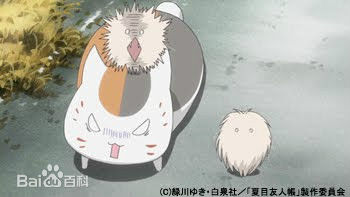
夏目与猫咪老师散步途中，本以为救起了一只小猫咪，没想到却是只毛球妖怪。夏目为毛球妖怪疗伤，并让他在房里待了一晚。隔天，将毛球妖怪放生回家後，夏目却被之前归还名字的妖怪甘菜攻击。甘菜掉了宝贝的戒指，一口咬定是夏目偷的，并要胁夏目，如果不归还，就要把夏目家一带烧光。夏目跟猫咪老师不得已，只好帮忙找寻戒指。却发现，戒指很有可能在毛球妖怪身上。
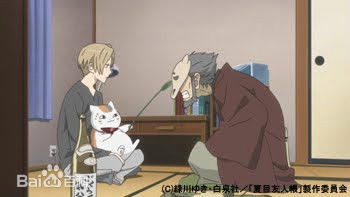
家里跑来了一个，会模仿塔子婶婶声音的妖怪。原来他希望夏目帮他叫出友人帐上的妖怪“借纸”。这名想拿夏目当诱饵引出借纸，自称为“呼子”的妖怪，向夏目表明，借纸是能够修复古纸的妖怪，他希望借纸能帮他修复一封，因为日晒雨淋而皱成一团的旧信。呼子无论如何都要看到信的内容，是有原因的。
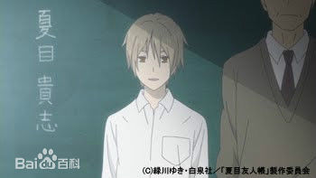
由梨子住在夏目国中时，曾短暂居住过的城镇。每当考不及格时就会到神社的由梨子，今天也叹著气，来到了神社。国中时，由梨子也是在这座神社，与夏目相遇的。
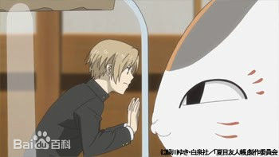
夏目被抓进妖怪的瓶子里了。想要打开瓶子，只能先抓到瓶子的主人了。为了不让身旁的人担心，猫咪老师化为夏目的模样。但当晚，拥有瓶子的妖怪来取回瓶子时……
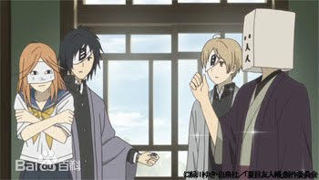
田沼正在寻找被抓走的夏目时，不小心闯入了妖怪的世界。田沼踏进妖怪群聚的宅邸，好不容易把夏目救出瓶子，却让人类的身份曝光了。就在妖怪们一涌而上，千钧一发之际，出现了一名头套纸袋的神秘男子，救了夏目与田沼。
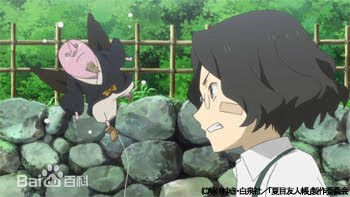
夏目被突然从空中出现的妖怪抓走了。这个误认夏目是铃子的妖怪，希望夏目藉由友人帐的力量，呼唤他被封印的妖怪朋友。另一方面，与夏目失散的猫咪老师，在山中废屋的古井中，感觉到奇妙的气息而不小心失足掉进古井。而猫咪老师在古井中遇见的，竟然是除妖人的场一门的七濑。
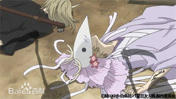
月分祭，是丰收之神丰月神，与荒作之神不月神举行比赛，进而祈求丰收的祭典。要是不月神得胜，整座山将会牯陧C但是在祭典开始之前，丰月神竟然被除妖人封印了。名取接受委托，要找出丰月神的下落，而来到了三隅山。然而，应该已经被封印的丰月神，却出现在名取面前。而这个丰月神，长得跟夏目一模一样。
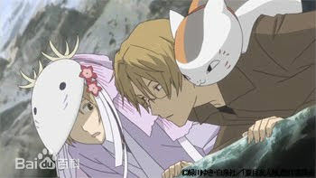
月分祭终于开始了。夏目代替被封印的丰收之神倰月神，与受托寻找丰月神的名取，一起前往留有丰月神气息的悬崖边。但是，就算找到丰月神，只要不月神赢了比赛，山林终究将枯竭。这一次与不月神比赛的内容，是谁先抓到壶中逃出的怪兽，谁就是赢家。为了赢得与不月神之间的比赛，夏目用名取准备好的咒文与瓶子封印了怪兽，眼看胜利就在眼前。
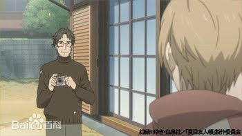
夏目与田沼等人约好要去寻找柠檬汽水的涌泉。正当一群男生嬉闹时，夏目接到以前曾受过照顾的亲戚来电。原来是夏目小时候曾跟父亲一起生活过的房子，已经找到买主，要转手卖掉了。有这么多心地善良的人在身边，夏目自觉应该不会再为往事心痛，於是他找出一张年代悠久的相片，相片中的身影，是夏目的父母。
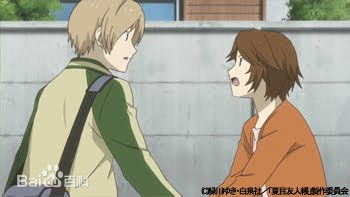
夏目告诉藤原夫妇，他想回去看看老家最后一眼。于是夏目来到亲戚三世子的家里，要拿老家的钥匙。以前曾在这个家待过一阵子的夏目，看著附近熟悉又陌生的景色，想起以前的回忆，也想起这个家里，以前住着一个妖怪。
夏目被住在三世子家的妖怪食虫侵入了内心，使他的意识迷失在过去的回忆中。而他看见的是，住在三世子家时，悲伤痛苦的回忆。在那里，自觉没有栖身之所的夏目，只能忍住看父母照片的冲动，并欺骗自己，自己一点也不寂寞。其实，他呼喊过无数次，无数次…但当他领悟，无论再怎麼呼喊，也永远得不到时，他决定再也不去呼喊，决定忘记一切。